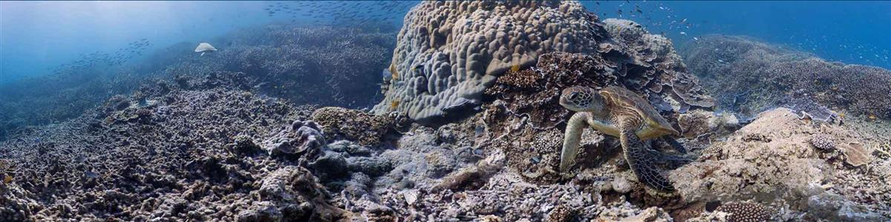
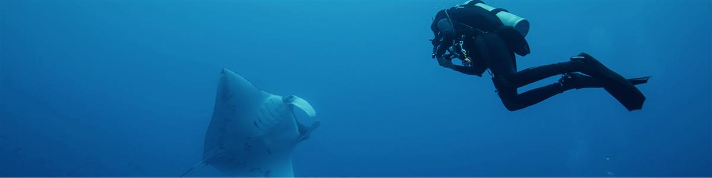
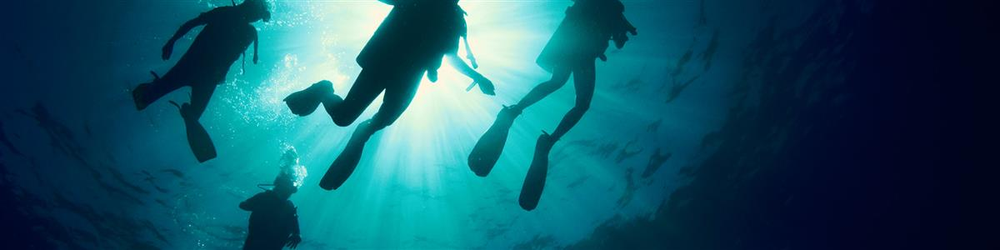

TOGETHER FOR THE OCEAN
We love the ocean, and we want to do what we can to protect it for the future. Divers see the damage that human activity is having on the ocean environment more clearly than anyone else and we have realised that it is time for us to make changes to prevent further damage.
Mission 2020 is a collection of pledges from organisations within the diving community to change their business practices in order to help protect and preserve our oceans for the future.
With a primary focus on single-use plastic, the project sets ambitious short term targets of changes to be made before World Oceans Day 2020.
Mission 2020 was originally conceived by fourth element as a statement of its intentions to eliminate the use of single-use plastic in the packaging of all its products by 2020 and to continue to develop new products (and re-develop its existing products) using recycled materials wherever possible. By inviting other organisations within the dive community to join Mission 2020 and encouraging them to make their own commitments, fourth element hopes to make this a commitment of the global dive community to protect the very thing which we enjoy – the ocean.

SOURCE: MISSION 2020
GET INVOLVED: KEEP ME INFORMED - MAKE A PLEDGE
VISIT: WORLD OCEANS DAY 2020
FOURTH ELEMENT: OCEAN POSITIVE

